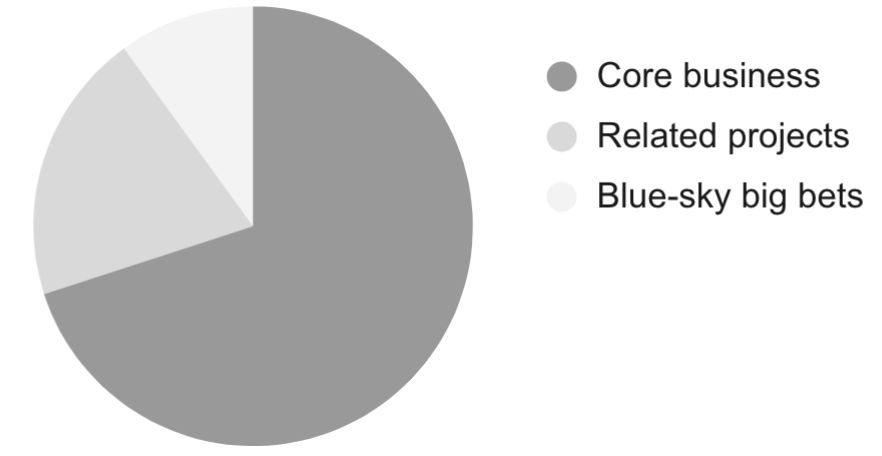

Chapter 17
You're setting off on a long road trip across the country or continent. You pack your bags, prep some snacks and drinks for the ride, load your family and friends in the car, and you're off. Or are you?
In the days of Google Maps, Waze and other mapping apps, it's true that you don't actually need to plan your route. Just punch in your far-off destination and it will indeed route you there—and efficiently, too. Yay.
But what this approach misses is your goals and priorities. It's optimized solely around getting you to the final place destination as fast as possible. It didn't consider that you'd like to camp for a few days in a national park, or see the ocean, or visit your friend in Chicago along the way.
It also missed your constraints. You need regular cell and WiFi access, so you don't want to drive anywhere too secluded. You'll also need to stop somewhere to sleep each night—and some of those places might need reservations.
It turns out that just blindly setting off toward the final destination (or what you believe the final destination to be), doesn't perform well against your priorities at all. You can go without it for a short trip, but for a longer trip, you need a roadmap that takes into account your goals, constraints, and priorities.
A product roadmap is much the same. Driving toward the final product might get you there eventually, but "there" might not be the right place at all. And it's often essential, particularly for a bigger project, to make a number of "stops" along the way.
As a PM, you're responsible for deciding what work your team will pick up, and in what order. You'll need to balance competing priorities and connect your plans to your strategy and vision to ensure you're headed in the right direction and can achieve your goals. This is what your roadmap does.
Creating a roadmap is basically scoping (see Chapter 11: Scoping and Incremental Development ) at a larger scale. Instead of figuring out the incremental releases within a project, you're ordering work across multiple projects and a larger period of time.
Despite the proliferation of prioritization frameworks, there is no single objectively correct way to prioritize work. Prioritization is about tradeoffs, and it requires sound judgment.
It can be useful to create a table of the factors you're considering, and even to give each factor a weight. But don't blindly rely on the score. When you do this, you can wind up pursuing the wrong path, or wasting hours trying to refine your calculations until it gives the results you want. The tradeoffs between options are real, and purely quantitative calculations can miss that.
With all of those caveats, here are some factors to consider. They can be further subdivided, or grouped together to help highlight the differences. At the simplest, you could look at cost/benefit analysis.
Estimated cost and constraints:
When you look at your final prioritization, make sure that you're tackling enough important work and not just "snacking" on the low cost/low benefit work. 1
Ensure your work aligns with the strategy ⚡
As you plan your work, connect each project to the strategy explicitly.
If a part of your work doesn't connect, treat it seriously. Do not plow ahead on the part of the strategy that doesn't connect; you'd be investing effort in something that the company doesn't think is valuable, and it will hold back your career.
Instead, see if there's a way to connect the dots from the goals you care about to the strategic goals. If not, discuss it with your manager and see if the strategy needs to be updated.
Create a long-term roadmap for your team ⚡
There's a great deal of debate in the tech community about long-term roadmaps. Some people worry that they'll be locked into dates, feature sets, or solutions that don't make sense. They worry it will prevent them from adapting and learning on the go.
Those are valid concerns, as these issues can happen when roadmaps are used poorly. Luckily, there are ways to create and use roadmaps that avoid those problems and create huge benefits.
Roadmaps are important for a lot of reasons:
Here are some tips to avoid the pitfalls of roadmaps:
Roadmaps can be powerful tools—when used appropriately.
Don't overlook the obvious wins
PMs tend to be lured by fancy new functionality, but the biggest wins are often obvious and even boring. If you can reliably find the cheap changes that bring big wins, you'll quickly become a top-notch PM.
I've seen PMs score big wins through simple improvements like:
These fixes might not look "cool," but if they bump up your metrics and help customers, that's what really matters.
Saying "no" is hard, and it's not a skill most of us practice regularly before becoming a PM. We're generally told what to do by those with power—our parents, our teachers, our bosses—and we don't really have the freedom to say no to them.
Cultural expectations can make it even harder.
Kunwardeep Singh, a senior product manager at Chegg, was born and raised in New Delhi. He states:
Culturally, we were taught it's very rude or harsh to say 'no' to elders. In my early product days, I thought the business people knew more than me and I was supposed to say 'yes' to their product requests. That led to a lot of scope creep and misalignment between teams. I had to learn that saying 'no' is not offensive; it's not something bad. I'd ask myself after meetings why I'd said 'yes' and learned my own way of saying 'no' that worked for me.
Here are some tips on how to say no:
Michelle Thong, Senior Product Manager for Nava Public Benefit Corporation, has found that, in government services, it can be particularly hard to say no. While companies can pick and choose their target customers, the government needs to serve everyone. Thong saw that government departments would sign up for many more projects than they actually had time to complete.
To help them accept the need to prioritize and cut some work, she had them write all of their projects, products, and services on a wall so they could see how much there was. When they saw it written down, they realized they couldn't do it all. She then had them slot projects into the next four quarters so the department could focus on the work that could be accomplished in a year.
Don't panic when executives torpedo your roadmap
Many PMs face similar situations, but it's rare that the executive is actually unreasonable. It's much more likely that the PM was too much in a bubble and didn't fully understand or respect the executive's point of view.
In the example above, did you see how Tara took the narrow view of "customer benefit" and dismissed the value of a complete marketing story?
This is not to say that the executive is always right, but if you want a chance of controlling your own roadmap, you need to show executives that you understand the broader picture.
In this case, the head of marketing had a draft of market analysis that Tara hadn't seen yet, and believed the current offering wouldn't bring in enough new customers. Once Tara understood that, she decided to work with marketing on a test of the marketing message with and without the splashy features to estimate the impact. They could move forward when they had better data.
If there's still a disagreement, you have a few options:
As you discuss and debate, assume the other party is acting in good faith. You probably share the same highest level goals, so now you need to figure out whether you disagree due to different information, different priorities, or something else.
Prioritize competing goals with a balanced portfolio ⚡
Early in my career, I prioritized work in a single stack-ranked list. It included new functionality that would work towards our vision, ideas for iteration on past features, small customer requests, and a backlog of long-term engineering investments we wanted to make. We calculated the cost and benefit of each... and the new functionality won every time.
Each individual prioritization made sense, but, taken together, the quality of our product was declining.
At some point, while working on strategy, every PM faces a scenario like this.
The trick to managing these trade-offs is to treat your strategy and roadmap like a balanced portfolio. Decide at a higher level what percentage you want to invest in each goal.
You might decide that your team should focus 80% on user growth and 20% on revenue. Or, you may split your roadmap to be 30% on customer requests, 50% on big bets, and 20% on engineering debt. One common split that Google made famous is 70/20/10: 70% on sustaining the core business, 20% on related projects, and 10% on blue-sky big bets.

Once you have your buckets, you can prioritize potential work within each bucket, without having to compare items across buckets.
When you pick the percentages, you don't need to be too precise with the exact numbers. What you'll find is that when you present a percentage to your stakeholders, they will have an immediate reaction around which buckets seem too big or too small. As you iterate, you'll find there's some split that feels right to you and your partners based on their relative importance and the minimum investment that would be feasible. If you can't agree, that usually means there's deeper strategic misalignment on the relative priorities.
There are a few ways to implement the percentages:
You need to find the solution that works for each team—and it might vary across teams or over time.
This is a simple concept, but PMs sometimes forget to use it.
When creating a roadmap, you need to consider both the expected benefits and the expected costs of the work. The ratio of these is called the return on investment.
If you have one project that you think will bring in $1 million in revenue and another that will bring in $5 million, it might seem like the second project is the clear choice. But, if the $1 million project takes a week and the $5 million project takes a few months, the obvious choice might not be right.
Similarly, if you have a project that you're very confident will bring in $1 million in revenue with 1 month of work, that could be a better choice than a project that might bring in $2 million in revenue in a month, but could also take six months. This is one of the reasons estimating costs and timelines is important.
Many projects don't have a revenue projection, but the same thought process applies. Would the project still feel worth it if it took five times as long as you expect? Software estimates are notoriously inaccurate, but over time you'll develop an intuition for which projects have higher variance.
The idea behind an outcome-based roadmap is that instead of sharing a roadmap that says which features you'll build in each timeframe, the roadmap says what outcomes you'll achieve in each timeframe. For example, instead of saying "build new calendar view," the roadmap would say, "reduce time-to-schedule-an-event by 20%," or, "build new calendar view to reduce time-to-schedule-an-event by 20%."
What's great about outcome-based roadmaps is that they keep the team focused on the results that matter, and can prevent stakeholders from thinking that the product team is committing to a specific solution. They emphasize the reasons and goals behind the work. This is particularly important if your team doesn't have a strategic framework or OKRs (see Goals and OKRs in Chapter 34) .
An outcome-based roadmap is a way to move in the right direction; they help ensure the team doesn't think just shipping features constitutes success.
The confusion around outcome-based roadmaps tends to be whether they can or should reference solutions at all.
As an extreme approach, you could ignore solutions and create your roadmap solely around the goals you'd like to achieve.
A roadmap that only includes goals could work if you're creating a roadmap that someone else is responsible for delivering, as long as they have a chance to consider solutions and costs with their engineers before agreeing to it. It gives them the most autonomy over what to build.
You can also use this approach if partners and leaders at the company don't need more granular timeframes than now/next/later.
This extreme has some large downsides. If you haven't thought about solutions, it will be hard to know if those goals are achievable at all, let alone in a given timeframe. It also doesn't give partners the ability to plan their own workloads.
Consider solutions but don't put them on the roadmap
A less extreme approach is for the product team to think about what features they might build for each outcome, but not write the solutions on the roadmap. The roadmap that is shared across the company only includes the outcomes. Those outside the team won't get overly attached to specific solutions, but the team benefits from the planning and has a more realistic chance of achieving the results.
If your team has earned trust that they can deliver, or if stakeholders aren't that interested in the details, this can be an effective approach. This approach works especially well for growth or monetization teams where the specific optimizations don't really matter, and the solutions really are likely to change based on how each experiment goes.
Include outcomes and solutions
The most general purpose approach is to start with a traditional feature-based roadmap and add high-level goals, outcomes, and a caveat that the solutions might change. With this approach, if the solutions change in a way that will affect partner teams (for example, changing from a big launch of a brand new calendar view to a small bug fix in the existing product), you'll want to communicate that change broadly so that people don't make plans around the original solution.
This approach works best when the high-level shape of the solutions matters to the company, for example, when there's a lot of partnership work. It's also the easiest approach to switch to if you currently use feature-based roadmaps. The other approaches require more executive buy-in and change management. Company leaders usually need to have an idea of what the product teams are working on, and, often, an outcome is too abstract for their purposes.
For most of my career, when it came time to create a product roadmap, I worked with customer-facing and business teams—of which there were many—independently. I'd gather the lists of their top requests, and then use my own judgment and understanding of company strategy to decide how to merge the lists. I spent a lot of energy explaining to the support team why I hadn't prioritized a revamp of the scripts they depended on, or I'd wonder if I'd been overly influenced by our charismatic salespeople.
One day, Asana's Head of Business, Chris Farinacci, excitedly shared an idea with me: What if the business leaders took ownership for collecting and ranking the priorities from the customer-facing and business teams into a single list? The business leaders were much closer to the business strategy and would know how to weigh the feedback coming in from each channel. I wouldn't be obligated to follow the ranked list when setting the roadmap—I could still use my discretion—but, we'd be aligned on the top customer and market needs.
And thus, the "Voice of the Customer" process was born. 2 It's had a huge influence on both the success of the work we tackled, and on cross-functional trust and morale.
If you want to start a Voice of the Customer process for your product, the first step is to pair with the top customer or business leader for the product, as that person will be the one owning it. The primary benefit for them is that they get more strategic control over how product teams interpret the needs coming from business teams, since they decide the ranking of the final "Voice of the Customer" list. A secondary benefit is team morale and accountability. Each person on the business team will be able to see how their top priorities were merged into the ranking and know that those choices were made by people close to them within the organization.
Once the business leader is on-board and has picked a person to run the process, you'll want to work closely with that person to make sure the results you get are as useful as possible.
Here are some tips:
It might feel strange to hand this responsibility to another person, but doing so can greatly improve the relationship between product and business teams. Over time, people on the business teams will get better at translating customer feedback into useful product insights, and you'll be able to rely on them as helpful partners. In the bigger picture, you're not handing over much control, since you'll still be able to use your discretion to set the roadmap.
1 . For more about the dangers of snacking on easy, low-impact work, you can read https://www.intercom.com/blog/first-rule-prioritization-no-snacking/
2 . Read more about the Voice of the Customer process at https://www.codementor.io/blog/how-to-build-a-product-roadmap-the-asana-way-2kvo8z70dm